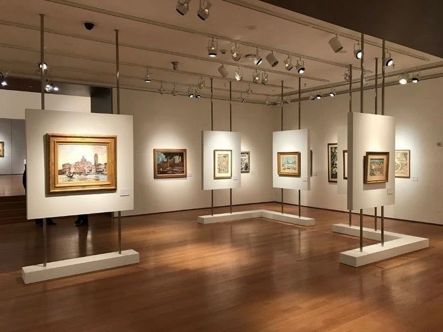

Local Artists Showcase Work at Annual Fair
NAIROBI, KENYA – The annual "Community Art Fair" held last weekend in Nairobi's Central Park was a resounding success, drawing thousands of art enthusiasts and collectors. The fair featured diverse works from over 100 talented local artists, showcasing the rich cultural tapestry and creative spirit thriving within the city.
Organized by the Nairobi Arts Council in partnership with local galleries, the event provided a crucial platform for emerging and established artists to exhibit their paintings, sculptures, photography, and mixed-media creations. "It's truly inspiring to see the community come together to celebrate local talent," said Ms. Grace Wambui, Director of the Nairobi Arts Council. "This fair not only boosts our artists but also enriches the cultural landscape of our city."
Highlights from the Community Art Fair:
- A diverse range of artistic styles, from traditional African motifs to contemporary abstract pieces.
- Live demonstrations by painters and sculptors, offering insights into their creative process.
- Interactive workshops for children and adults, fostering new artistic skills.
- A special exhibition dedicated to sustainable art, featuring works made from recycled materials.
- Networking opportunities for artists to connect with gallerists and art buyers.
A local artist discusses their work with visitors at their booth during the fair.
The La Familia Chamber of Commerce commends the organizers and participating artists for a truly remarkable event. "Supporting the arts is integral to a vibrant economy and community," stated David Kimani, Board Member of the Chamber. "The success of the Community Art Fair highlights Nairobi's potential as a creative hub and its ability to attract both local and international attention."
Plans are already underway for next year's fair, promising even more artists and expanded attractions. For more information on local art initiatives and future events, visit the Nairobi Arts Council website at www.nairobiartscouncil.co.ke or contact them at +254 734 567890.